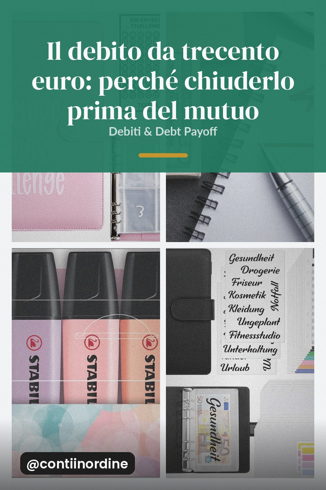

Interessi percentuali e ordine di attacco: il piccolo debito al tasso più alto batte quello grande con rata leggera.

Quando ci sono due debiti, la maggior parte delle persone sceglie di chiudere prima quello più grande, perché è quello che fa sembrare la situazione più grave. È quasi sempre la scelta sbagliata, e la ragione sta in una parola: percentuale.
Un debito da trecento euro al ventidue per cento e uno da ottomila al sei per cento sono due problemi di dimensioni diverse, ma il primo ti morde molto di più. Il costo del debito si misura sul tasso, non sull'importo: il piccolo debito caro ti costa in proporzione più di quanto ti costerebbe una rata alta su un debito economico.
Chiudere il debito piccolo libera una rata. Quella rata, di per sé, non basta a chiudere il debito grande, ma può andare in più sul debito grande. Il salto di rata è ciò che accelera davvero, e lo salti solo se continui a pagare le rate minime del piccolo debito ancora per sei mesi.
La rata minima è la trappola più comune. Pagandola per intero si chiude il debito al doppio o al triplo del tempo previsto, e spesso si paga in interessi una cifra che sarebbe stata il pagamento della macchina. Ogni volta che ricevi un extra, manda tutto al debito con il tasso più alto, anche se la rata minima resta formalmente attiva.
Il primo debito che chiudi diventa l'eccezione da mantenere, e chi lo mantiene con soddisfazione spesso alza la rata per festeggiare e si rende conto che il debito grande è ancora lì. L'ordine migliore è: prima il piccolo caro, poi tutto il resto sul grande, e la vittoria la godi con qualcosa che non costa soldi.
Un semplice foglio con quattro colonne: debito, tasso, rata che paghi e quanto hai abbassato il saldo. Il primo mese ti spaventa, il terzo diventa l'unica cosa che guardi. Senza un tracker, il saldo che scende è invisibile e il dubbio su come stai andando ti fa smettere proprio quando i risultati iniziano a vedersi.